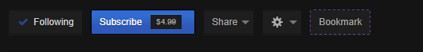

What is this??
This is a chrome extension developed to replace the "Bookmark" button on Twitch. The Bookmark button offers a way for broadcasters, moderators, and editors to save moments during a live stream to be highlighted later.
The bookmark button has not functioned for some time, so this chrome extension aims to replace its functionality (and extend upon it in the near future).
Features
- Ability to bookmark any stream you are currently viewing
- A clean, simple to use & understand management interface
- The ability to synch bookmarks between two chrome browsers using chrome's synch functionality!
- Stuff I am forgetting or been awake too long and think ive already implemented
How is it used?
Once the chrome extension is installed, you'll see something that looks like the following when viewing someones stream, or if you have your stream open.

This is the normal Twitch userbar (the screenshot is the darkbttv theme, but this extension works reguardless!). The origonal bookmark button is hidden, and a new bookmark button is added.
For visual feedback on if the bookmark button is working, there will be a purple border. If you do not see this border, in most cases all you need to do is refresh the page.
Once you click the bookmark button, that particular moment in time on the stream will be saved and can be managed by clicking the purple "B" icon in the upper right on chrome.

This is the management interface you get when clicking the "B" button. This interface is really simple. It tells which stream the bookmark is from, a shortened title of whatever the title on the stream is, and the time at which the bookmark was made.
To delete the bookmark, just click the circle with the line through it.
Current Known Bugs
- 24 hour streams may cause issues with timestamps (not sure on this, needs more science)
- sometimes the bookmark button does not appear, causing the normal bookmark button to appear instead. this may be due to how javascript is interacting with pages.
- sometimes clicking the "B" button results in a weird looking interface
Caveats
- the stream must be live for 30 minutes. This is because of the way the vod system works. the earliest point in time which a vod can exist during a current broadcast is between 25-30 minutes.
- Timestamped bookmarks will not work until 30 minutes have passed (again, because of the vod system working in 30 minute chunks).
The future
- Custom naming system
- visual notifications for when a timestamped vod has passed the 30 minute treshhold and can be viewed
- each vod can have a drop down details system that would display stuff like screenshots, description, etc
- Find a way that when you highlight the vod, if you click through to highlight, the extension will notice and fill in the start/end times
- add in options where a user can set it to timestamp x amount of time before the button was pressed. useful for more accurately finding the highlightable moments that was timestamped *just* after the fact.
- Hotkey support, possibly without the chrome window in focus?
- A way to back up currently saved bookmarks
- I don't know, you tell me!